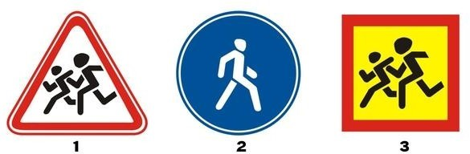
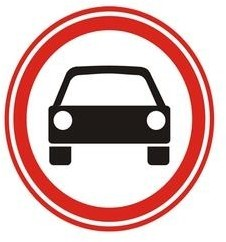
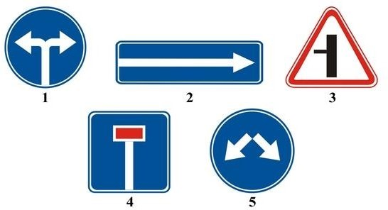
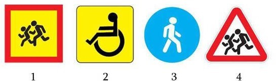
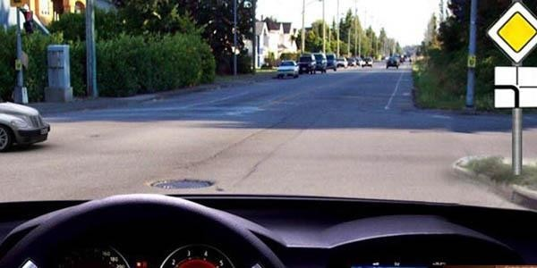
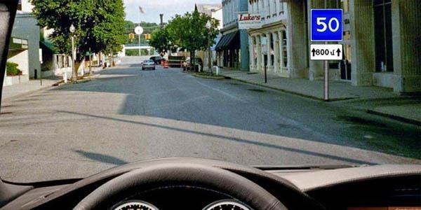

48. Այս նշաններից ո՞րն է համարվում տրանսպորտային միջոցի
ճանաչման նշան։

49. Ո՞ր տրանսպորտային միջոցի երթևեկությունն է արգելում այս
ճանապարհային նշանը։

50. Նշաններից ո՞րն է ցույց տալիս արգելքի շրջանցումն աջից կամ
ձախից։

51. Նշաններից ո՞րն է տեղադրվում տրանսպորտային միջոցների առջևի
և ետևի կողմերում` երեխաների կազմակերպված խմբեր տեղափոխելիս։

52. Ի՞նչ են ցույց տալիս նշված ճանապարհային նշանները։

53. Ի՞նչ են ցույց տալիս նշված ճանապարհային նշանները։

54. Ո՞ր նշանների ազդեցությունն է գործում միայն այն
ժամանակահատվածում, որի ընթացքում երթևեկելի մասի ծածկույթը
խոնավ է։
55. Ինչպե՞ս պետք է վարվի վարորդը տվյալ իրադրությունում։
56. Ի՞նչ են ցույց տալիս նշված ճանապարհային նշանները։
57. Ո՞ր ուղղությամբ է թույլատրվում վարորդին երթևեկել։
58. Ի՞նչ են ցույց տալիս նշված ճանապարհային նշանները։
59. Ո՞ր ճանապարհային նշանն է արգելում հետադարձը։
60. Ի՞նչ են ցույց տալիս նշված ճանապարհային նշանները։
61. Ինչպե՞ս պիտի վարվի վարորդն այն դեպքում, երբ խաչմերուկից
առաջ տեղադրված է հետևյալ ճանապարհային նշանը։
62. Ո՞ր ճանապարհային նշանների ազդեցությունը չի տարածվում
ընդհանուր օգտագործման տրանսպորտային միջոցների վրա։
63. Հետևյալ ճանապարհային նշանը ցույց է տալիս`
64. Տվյալ իրադրությունում պարտավո՞ր է վարորդը ճանապարհը զիջել
բեռնատար ավտոմոբիլին։
65. Ի՞նչ են ցույց տալիս հետևյալ ճանապարհային նշանները։
66. Ի՞նչ են ցույց տալիս հետևյալ ճանապարհային նշանները։
67. Ի՞նչ է ցույց տալիս հետևյալ ճանապարհային նշանը։
68. Ո՞ր ճանապարհային նշանն է պարտադրում վարորդին երթևեկել
միայն դեպի ձախ կամ դեպի աջ։
69. Ի՞նչ են ցույց տալիս հետևյալ ճանապարհային նշանները։
70. Տվյալ ճանապարհային նշանների ազդեցությունը տարածվում է`
71. Տվյալ իրադրությունում ո՞ր հետագծով է թույլատրվում արգելքի
շրջանցումը։
72. Ինչպե՞ս պետք է վարվի վարորդը տվյալ իրավիճակում։
73. Ինչպե՞ս պետք է վարվի վարորդը, եթե խաչմերուկում մտադիր է
կատարել աջ շրջադարձ։
74. Տվյալ իրադրությունում նշանից 200 մ հեռավորության վրա
վարորդն ունի՞ արդյոք հետադարձի իրավունք։
75. Տվյալ դեպքում պարտավո՞ր է վարորդը կանգ առնել կարգավորողի
կողմից նշված տեղում։
76. Ինչպե՞ս պետք է վարվի վարորդը տվյալ իրավիճակում։
77. Ի՞նչ է ցույց տալիս երթևեկելի մասում արված գծանշումը։
78. Ո՞ր ուղղությամբ է թույլատրվում թեթև մարդատար ավտոմոբիլի
երթևեկությունը։
79. Ինչպե՞ս պետք է վարվի վարորդը տվյալ իրադրությունում։
80. Ստորև ներկայացվող ճանապարհային նշաններից ո՞րն է արգելում
մուտք գործել խաչմերուկի տարածք, եթե առջևում՝ երթևեկության
ուղղությամբ առաջացել է խցանում, բացառությամբ աջ կամ ձախ
շրջադարձ կատարելու դեպքերի։
81. Ի՞նչ առավելագույն հեռավորության վրա է տեղադրվում բարդ
խաչմերուկներում «խաչմերուկի տարածք» ճանապարհային նշանը, եթե
այն հնարավոր չէ տեղադրել խաչմերուկի սահմանին:
82. Ինչի՞ մասին է զգուշացնում հետևյալ ճանապարհային նշանը:
83. Ի՞նչ է ցույց տալիս հետևյալ ճանապարհային գծանշումը:
84. Ստորև ներկայացված ճանապարհային գծանշումներից ո՞րն է ցույց
տալիս խաչմերուկի հատվածը, որտեղ արգելվում է մուտք գործել, եթե
առջևում՝ երթևեկության ուղղությամբ առաջացել է խցանում, որը
վարորդին կհարկադրի կանգ առնել:
85. Հետադարձ կատարել նշված գոտուց
86. Ո՞ր հետագծով է թույլատրվում հետադարձ կատարել
87. Ո՞ր հետագծով է թույլատրվում հետադարձ կատարել
88. Ո՞ր հետագծով է թույլատրվում հետադարձ կատարելը
89. Պարտավոր եք արդյո՞ք կանգ առնել «Կանգ-գծի» առջև
90. Երթևեկությունը թույլատրվում է
91. Այս իրավիճակում
92. Այս նշաններից հետո 3.5 տոննայից ոչ ավել թույլատրելի
առավելագույն զանգվածով բեռնատարի վարորդին երթևեկության
առավելագույն արագությունը սահմանված է
93. Ի՞նչն է արգելված այս ճանապարհային նշանով
94. Որտե՞ղ է անհրաժեշտ կանգ առնել նշանի պահանջը կատարելիս
95. Ո՞ր նշանն է արագության սահմանափակում մտցնում։
96. Նշաններից ո՞րի ազդեցությունն է տարածվում միայն այն գոտում,
որի վրա կախված է
97. Կայանել նշված վայրում
98. Խախտել է արդյո՞ք կայանման կանոնները բեռնատարի վարորդը
99. Ո՞ր ուղղությամբ է թույլատրված երթևեկությունը
100. Ի՞նչ է ցույց տալիս լրացուցիչ տեղեկատվության ցուցանակը
101. Կանգառ կատարել նշված վայրում
102. Ո՞ր նշանների ազդեցությունն է տարածվում շարժման
ուղղությամբ մինչև մոտակա խաչմերուկը
103. Այս նշաններով ի՞նչ արագության ռեժիմ է սահմանված
ճանապարհին
104. Նշաններից ո՞րն է արգելում ձախ շրջադարձ կատարել
105. Թույլատրվո՞ւմ է վարորդին կատարել ձախ շրջադարձ
106. Նշանները տեղեկացնում են այն մասին, որ
107. Ո՞ր հետագծերով է թույլատրված երթևեկությունը
108. Նշաններից ո՞րն է արգելում երթևեկությունը 40կմ/ժ-ից պակաս
արագությամբ
109. Նշաններից ո՞րի դեպքում պետք է զիջեք ճանապարհը հանդիպակաց
երթևեկողին նեղ հատվածում
110. Ո՞ր ուղղությամբ կարող եք շարունակել երթևեկությունն այս
խաչմերուկում, եթե վարում եք 3.5 տոննա թույլատրելի առավելագույն
զանգվածով բեռնատար ավտոմեքենա
111. Թո՞ւյլատրվում է աջ շրջադարձ դեպի հողային ծածկույթով
ճանապարհը
112. Թույլատրվո՞ւմ է ուղևոր նստեցնելու նպատակով կանգառ կատարել
նշված վայրում
113. Ո՞ր նշանով է նշվում հետիոտնային արահետը
114. Այս ճանապարհային նշանը
115. Ինչպե՞ս կվարվեք, եթե անհրաժեշտ է շարժման ուղղությունը
փոխել հակառակի
116. Կայանումը նշված վայրում
117. Այս ցուցանակի դեպքում իր հետ օգտագործված նշանի
ազդեցությունը տարածվում է
118. Այս ճանապարհային նշանը
119. Նշված գոտուց ո՞ր ուղղություններով է թույլատրված
երթևեկությունը
120. Այս խաչմերուկում նշվածներից ո՞ր ուղղություններով կարող եք
շարունակել երթևեկությունը
121. Այս ճանապարհային նշանը
122. Ցուցանակներից որոնք են, իրենց հետ տեղակայված նշանի ազդման
գոտին ցույց տալիս
123. Ո՞ր բակ է թույլատրվում մուտք գործել վարորդին
124. Ո՞ր դեպքում է նշանի ազդեցությունն սկսվում անմիջապես
տեղակայման վայրից
125. Ո՞ր հետագծով է թույլատրվում շարունակել երթևեկությունը
126. Ի՞նչի մասին է նախազգուշացնում ճանապարհային նշանը
127. Նշաններից որի՞ ազդման գոտում չեն գործում բնակավայրում
երթևեկության կանոնները
128. Թեթև մարդատարի վարորդին ո՞ր ուղղությամբ է թույլատրվում
երթևեկել այս իրավիճակում
129. Բեռնաթափել ավտոմոբիլը այս ճանապարհային նշանի ազդման
գոտում
130. Նշաններից ո՞րն է արգելում հետադարձը
131. Թույլատրվո՞ւմ է նշված բակ մուտք գործել
132. Այս իրադրությունում կանգառ կատարել ուղևոր նստեցնելու
նպատակով
133. Ո՞ր նշաններից հետո է առանց թույլտվության երթևեկությունն
արգելվում
134. Այս դեպքում նվազագույնը որքա՞ն հետո կարող է հանդիպել
հավասարազոր խաչմերուկը
135. Սլաքներով նշվածներից ո՞ր ուղղությամբ կարելի է շարունակել
քարշակումը
136. Ո՞րտեղից են սկսում գործել բնակավայրով երթևեկության
կանոնները
137. Այս ճանապարհային նշանը
138. Այս նշանները պարտադրում են պահպանել առջևից ընթացողից
հեռավորությունը
139. Նշված գոտուց ո՞ր ուղղությամբ կարող եք շարունակել
երթևեկությունը
140. Այս նշանները նախազգուշացնում են
141. Թույլատրվո՞ւմ է կայանումը նշված վայրում
142. Նշաններից ո՞րն է 5 տոննա զանգված ունեցող բեռնատարի
վարորդին պարտադրում աջ շրջադարձ կատարել խաչմերուկում
143. Ի՞նչ ուղղությամբ կարող եք շարունակել երթևեկությունը նշված
խաչմերուկում, եթե վարում եք 3 տոննա թույլատրելի առավելագույն
զանգվածով բեռնատար
144. Նշաններից որով է կահավորվում արհեստական անհարթությունը
145. Ո՞ր հետագծով կարող եք շարունակել երթևեկությունը
146. Չկարգավորվող խաչմերուկում ո՞ր նշաններն են առավելություն
տալիս վարորդին հատվող ճանապարհով երթևեկողների նկատմամբ
147․ Թույլատրվո՞ւմ է վազանց կատարել այս իրավիճակում
148. Խախտել է արդյո՞ք բեռնատարի վարորդը կայանման կանոնները
149. Ո՞ր հետագծով է թույլատրված հետադարձ կատարելը
150. Ամսվա կենտ օրերին կարելի է՞ կայանել նշված վայրում
151. Ո՞ր նշաններով է նշվում այն հատվածը, որտեղ վարորդները պետք
է զիջեն երթևեկելի մասը հատող հետիոտներին
152. Նշաններից ո՞րն է նախազգուշացնում հանդիպակաց երթևեկությամբ
ճանապարհի սկզբին մոտենալու մասին
153. Թո՞ւյլատրվում է մոտենալ աշխատանքի վայրին այս նշանների
ազդման գոտում
154. Թույլատրվում է արդյո՞ք կցորդ քարշակող թեթև մարդատարի
երթևեկությունն այս խաչմերուկում ուղիղ ուղղությամբ
155. Նշվածներից ո՞ր ուղղությամբ է թույլատրված երթևեկությունը
156. Այս նշանը
157. Ո՞ր դեպքում է նշված հետադարձի համար գոտու երկարությունը
158. Բնակավայրում ի՞նչ հեռավորությունից է սկսվելու սայթաքուն
ճանապարհահատվածը
159. Ո՞ր տրանսպորտային միջոցների վրա չի տարածվում կանգառն
արգելող նշանի ազդեցությունն այս դեպքում
160. Մյուս խաչմերուկում նշվածներից ո՞ր ուղղությամբ կարող եք
շարունակել երթևեկությունը
161. Ո՞ր նշանի ազդման գոտում կարող եք երթևեկել 60կմ/ժ
արագությամբ
162. Ո՞ր վարորդն է խախտել կայանման կանոնները
163. Նշվածներից ո՞ր ուղղությունն է թույլատրելի
164. Ո՞ր ցուցանակով կիրառված նշանի ազդեցությունն է տարածվում
3,5 տոննայից թեթև թույլատրելի առավելագույն զանգվածով բեռնատարի
վարորդի վրա
165. Ո՞ր դեպքում է տեղեկացվում երկու և ավելի ուղիներով
երկաթուղային գծանցի մասին
166. Հետադարձը նշված հետագծով
167. Կայանումը ուղեկամուրջից հետո
168. Այս ճանապարհային նշանները տեղեկացնում են
169. Ո՞ր նշաններն են թույլատրում հետադարձը
170. Նշված գոտով երթևեկելիս թույլատրվում է երթևեկությունը
171. Այս նշանը տեղեկացնում է այնպիսի թունելի մոտենալու մասին
172. Նշված վայրերից ո՞րտեղ կարելի է կանգառ կատարել
173. Նշաններից ո՞րի դեպքում կարող եք ձախ շրջադարձ կատարել
174. Այս նշանը նախապես տեղեկացնում է
175. Ո՞ր տրանսպորտային միջոցների վարորդների վրա է տարածվում
նշանների ազդեցությունը
176. Ո՞ր նշանի դեպքում կանգ առնելուց հետո առանց թույլտվության
շարժումը վերսկսել չի կարելի: